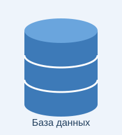
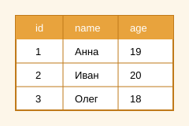

История создания

SQL (англ. Structured Query Language — «язык структурированных запросов») — декларативный язык программирования, который применяется для создания, изменения и управления данными в реляционных базах данных.
Основой для SQL стала реляционная модель данных, которую в году описал сотрудник компании IBM Эдгар Кодд в своей статье. После этого в IBM начали работу над экспериментальной СУБД System R, и для неё был нужен удобный язык запросов.
В начале 1970-х годов Дональд Чемберлин и Рэймонд Бойс разработали язык SEQUEL (Structured English Query Language). Позже его пришлось переименовать в SQL, потому что название «SEQUEL» уже было торговой маркой другой компании. Поэтому до сих пор многие произносят SQL как «сиквел».

Первой коммерческой СУБД с поддержкой SQL стала Oracle V2 в 1979 году. В году SQL был принят как стандарт ANSI, а в 1987 году — как стандарт ISO. С тех пор стандарт много раз обновлялся. Основные версии стандарта приведены в таблице ниже.
Данные должны храниться в виде отношений (таблиц)— главная идея реляционной модели Э. Кодда.
| Год | Название | Что добавили |
|---|---|---|
| 1986 | SQL-86 | Первая версия стандарта ANSI |
| 1989 | SQL-89 | Ограничения целостности |
| 1992 | SQL-92 | Новые типы данных, JOIN, большая доработка стандарта |
| 1999 | SQL:1999 | Регулярные выражения, рекурсивные запросы, триггеры |
| 2003 | SQL:2003 | Работа с XML, оконные функции |
| 2016 | SQL:2016 | Работа с JSON |
| 2023 | SQL:2023 | Графовые запросы (SQL/PGQ), тип JSON |
Краткий обзор языка
SQL — это декларативный язык: программист пишет, что нужно получить, а не как это сделать. Как именно найти данные, решает сама СУБД. Все данные хранятся в таблицах, которые состоят из строк (записей) и столбцов (полей).
Основные группы команд SQL
- DDL (Data Definition Language) — описание структуры:
CREATE,ALTER,DROP. - DML (Data Manipulation Language) — работа с данными:
SELECT,INSERT,UPDATE,DELETE. - DCL (Data Control Language) — права доступа:
GRANT,REVOKE. - TCL (Transaction Control Language) — транзакции:
COMMIT,ROLLBACK.
Популярные СУБД, которые используют SQL
- MySQL
- PostgreSQL
- SQLite
- Microsoft SQL Server
- Oracle Database
Основные типы данных
INT— целые числаDECIMAL— дробные числа с фиксированной точностьюVARCHAR(n)— строка длиной до n символовDATE— датаBOOLEAN— логическое значение
- Первичный ключ (PRIMARY KEY)
- Поле, которое однозначно определяет каждую строку таблицы.
- Внешний ключ (FOREIGN KEY)
- Поле, которое ссылается на первичный ключ другой таблицы.
Подробнее можно прочитать в статье SQL на Википедии. Примеры запросов есть в следующем разделе. Чтобы выполнить запрос во многих программах, нужно нажать Ctrl + Enter.
Примеры кода
1. Создание таблицы
-- создаём таблицу студентов
CREATE TABLE students (
id INT PRIMARY KEY,
name VARCHAR(50) NOT NULL,
age INT,
grp VARCHAR(10)
);2. Добавление данных
INSERT INTO students (id, name, age, grp)
VALUES (1, 'Анна', 19, 'КИ23-01'),
(2, 'Иван', 20, 'КИ23-01'),
(3, 'Олег', 18, 'КИ23-02');3. Выборка данных
-- студенты старше 18 лет, отсортированные по имени
SELECT name, age
FROM students
WHERE age > 18
ORDER BY name;4. Группировка
SELECT grp, COUNT(*) AS cnt, AVG(age) AS avg_age
FROM students
GROUP BY grp;5. Изменение и удаление
UPDATE students SET age = age + 1 WHERE id = 3;
DELETE FROM students WHERE grp = 'КИ23-02';
Результат запроса из примера 3:
Анна | 19
Иван | 20
Использованные теги и CSS-свойства
HTML-теги (53)
<a><abbr><address><b><blockquote><body><br><caption><cite><code><dd><div><dl><dt><em><figcaption><figure><footer><h1><h2><h3><head><header><hr><html><i><img><kbd><li><link><main><mark><meta><nav><ol><p><pre><q><samp><section><small><span><strong><table><tbody><td><th><thead><time><title><tr><ul><var>
CSS-свойства (40)
background-colorborderborder-bottomborder-collapseborder-leftborder-radiusbox-shadowcaption-sideclearcolorcolumn-countcursordisplayfloatfont-familyfont-sizefont-stylefont-weightheightletter-spacingline-heightlist-style-imagelist-style-positionlist-style-typemarginmargin-bottommargin-topmax-widthopacityoverflow-xpaddingpadding-bottomtext-aligntext-decorationtext-indenttext-transformtransitionvertical-alignwhite-spacewidth